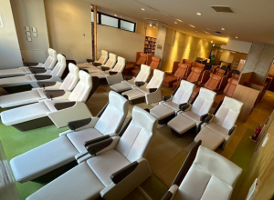
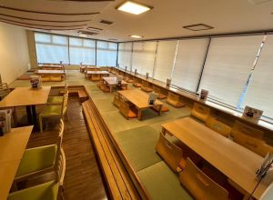
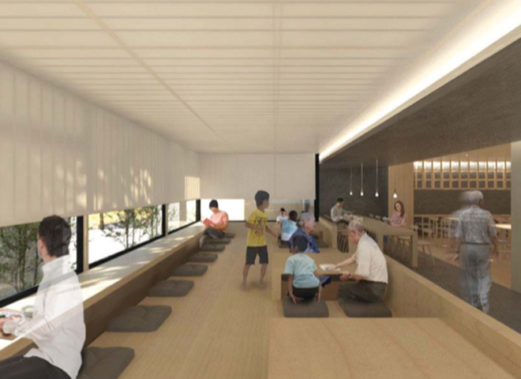
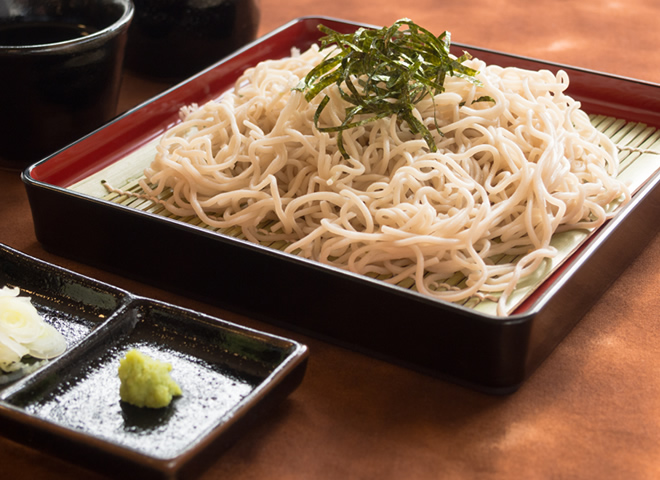

湯から上がって、そのまま
らくの1階にある食事処です。入浴のあと、館内着のままお越しいただけます。
カウンター席、半個室の席、団体での席をご用意しています。貸切もできます。
百年ダイニングのすぐ横には、足湯カフェがあります。


営業時間
平日 昼11:30〜15:00（ラストオーダー 14:30）
平日 夜17:00〜22:00（ラストオーダー 21:00）
土日祝11:30〜22:00（ラストオーダー 21:00）
営業時間は予告なく変わることがあります。クーポン・サービス券のご利用はラストオーダーまでです。
お品書き
定食、丼もの、麺類、おつまみ、お飲みもの。下はその一部です。
主なお料理
らく唐¥709
特製天丼¥436
ロースカツ定食¥618
まんぞく弁当¥800
味噌ラーメン¥527
野菜盛盛タンメン¥291
ナポリタン¥436
親子丼店内のお品書きで
価格は店内のお品書きが正本です。このページの金額は要確認（現サイトの表記のまま）。期間限定のお料理は、いまはありません。


北海道産 石臼挽きそば
国産の蕎麦の実を、風味を逃がさないよう石臼で時間をかけて挽いたそばです。香り、コシ、のど越しをお楽しみください。
食材の一部には、神奈川県の食材を使っています。